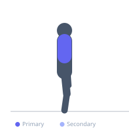
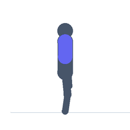

Exercise guide / Prone T-Raise
Prone T-Raise
The prone T-raise is a posterior shoulder and middle trapezius exercise performed lying face down with arms extended directly to the sides, forming a T shape. This horizontal abduction movement targets the posterior deltoid and middle trapezius and is a staple corrective exercise for improving shoulder blade retraction strength and postural alignment.
Primary muscles
deltoid posterior
trapezius middle
Secondary muscles
rhomboid major
rhomboid minor
teres minor
Stabilizers
trapezius lower
Equipment
No Equipment (Bodyweight)
Optional
Dumbbell (Fixed)


Starting position
- Lie face down on the floor or an incline bench with arms extended directly to the sides, perpendicular to the torso, forming a T. Thumbs point toward the ceiling.
Setup
- No equipment needed for bodyweight. Add light dumbbells (1–3 kg) for increased load. Can be done over an incline bench for greater range of motion.
Steps
- Step 1: Lie face down with arms extended to the sides in a T shape. Thumbs point up.
- Step 2: Depress and retract the shoulder blades.
- Step 3: Exhale and raise both arms toward the ceiling, squeezing the middle traps and rear delts.
- Step 4: Hold at the top 1–2 seconds, then inhale and lower back to the floor.
Coaching cues
- Squeeze your shoulder blades together as you raise
- Thumbs up keeps the shoulder in a safe external rotation position
Breathing
- Exhale on the raise; inhale on the return.
Range of motion
- Raise arms until middle traps are maximally contracted; they will not go very high.
Tempo
- 2-2-2-0
Common mistakes
- Letting the shoulder blades wing outward — actively retract them during the raise
- Using upper trap shrugging instead of mid-trap retraction
Safety
- Very light load only — this is a corrective and endurance exercise
Training
- endurance: 12–20 reps
- endurance: 3–4 sets
- Rest: {'endurance': 45}